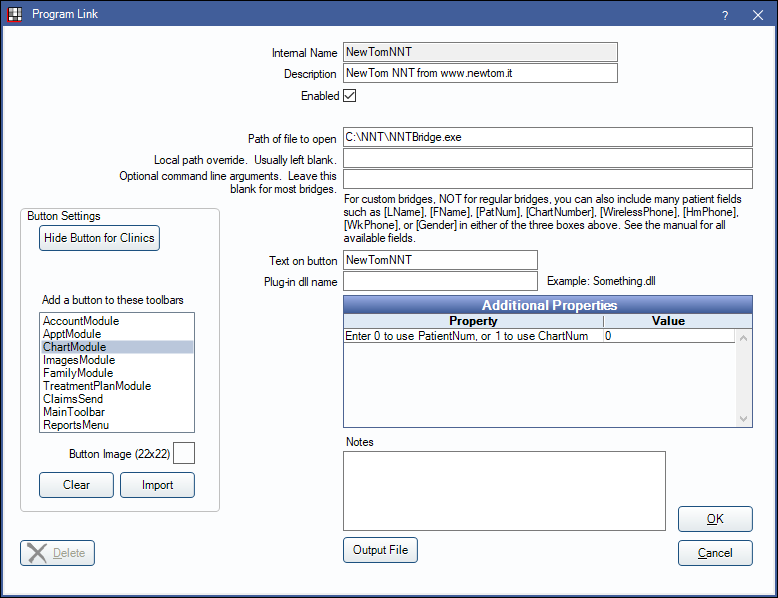

NewTom NNT Bridge
In the Main Menu, click Setup, Program Links. Double-click on NewTom NNT from www.newtom.it.
NewTom NNT is a digital imaging technology. Website: https://www.newtom.it/en/dentale/.
To enable the bridge:
- Check the Enabled box.
- Verify the Path of file to open.
- Double-click on Additional Properties to change settings. Use the PatNum (enter 0) or ChartNum (enter 1) as the patient ID.
- Set up a clickable bridge button.
- Under Add a button to these toolbars, highlight where to display the button.
- Enter the Text on button.
- (Optional) Import an image to show on the button (22 x 22 pixels).
- If using clinics, click Hide Button for Clinics. Select which clinics the button should display on.
- Click OK.
Technical Details
Optional command line arguments passed in for this bridge are [PatNum/ChartNum], [FName], [LName], [d,M,yyyy], [SSN].